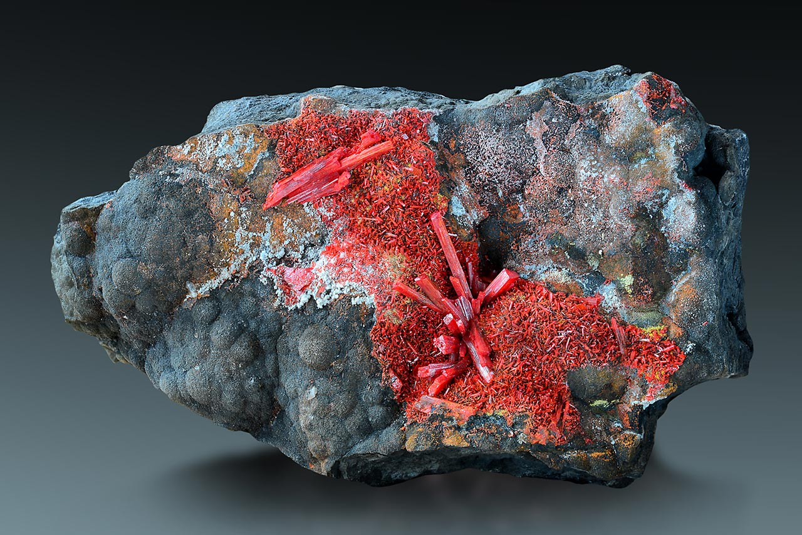

Arsenic is a naturally occurring toxic element that can be found all around in the air, water, and soil. Arsenic though mainly organic it can also be man made/inorganic. Though arsenic is poisonus it is much more poisonus when it is man made versus when it is found naturally. You can also find arsenic in apple seeds though it is not very strong. If you are trying to poison someone this is much better for a long term poisoning plan. After a long term exposure from arsenic it is possible to develop cancer or skin lesions. You can tell if you have skin lesion if you have abnormal skin such as moles, spots [not freckles, or pimples], bumps, or other growth. Skin lesion can cause infections such as chickenpox[Chicken pox is a highly contagus virus that causes itchy rashes, red sports, ad fluid-filled blister.], scabies[It causes itching and a rash], warts[Non cancerous skin growth.], shingles[painfulrash], or cellulitis [bacteria inefections].